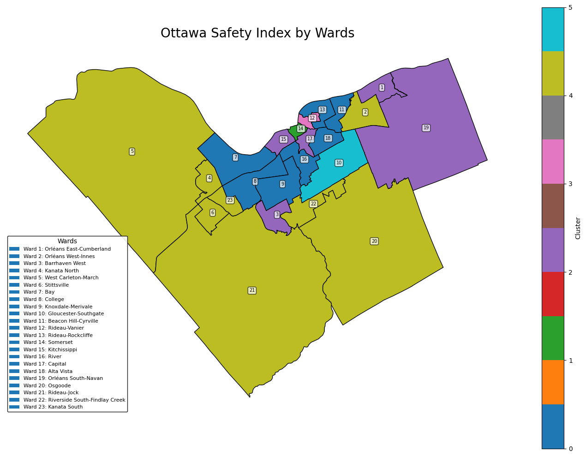

Ottawa: Grouping Wards by Safety using KMeans Clustering
Ranking and grouping all 23 Ottawa wards by safety — from safest to most dangerous — using machine learning and data visualisation to give residents, policymakers, and newcomers actionable insight.

The Problem
Whether you are a family choosing where to settle, a policymaker allocating safety resources, or a researcher studying urban crime, understanding relative safety across Ottawa's wards is valuable — but rarely presented in a clear, comparable format.
This project set out to objectively rank and cluster all 23 Ottawa wards by safety level using publicly available crime and incident data, letting the data — not perception — define what "safe" means.
Approach
Crime incident data from the Ottawa Police Service was cleaned and aggregated at the ward level. Key metrics — total incidents, incident rate per capita, and crime category breakdown — were computed for each ward before being passed to the clustering model.
Data Collection & Cleaning
Ottawa Police Service open data was sourced, cleaned, and standardised. Duplicate records, missing ward codes, and out-of-scope incident types were handled before analysis.
Feature Engineering
Per-capita incident rates were calculated using census population data. Incident types were grouped into broader safety categories (violent, property, public order) to provide a balanced feature set.
KMeans Clustering
KMeans clustering was applied to group wards into safety tiers. The optimal number of clusters was determined using the elbow method. Each ward was assigned a cluster label and ranked within its tier.
Visualisation
Results were mapped geographically to show safety clusters across the city. Bar charts and heat maps illustrated per-ward rankings and the crime categories driving each cluster's classification.
Key Findings
- Clear Safety Tiers: Wards clustered naturally into three distinct safety levels — high, moderate, and low — with no ambiguous borderline cases, suggesting strong separation in crime patterns across the city.
- Geographic Concentration: Lower-safety wards were concentrated in the urban core and inner suburbs, while outer wards and rural areas consistently ranked in the safest cluster.
- Crime Type Differences: High-incident wards were driven primarily by property crime, not violent crime — an important distinction for residents interpreting the rankings.
Conclusion
KMeans clustering provided a clear, data-driven framework for comparing ward safety across Ottawa. The output is directly useful to residents evaluating neighbourhoods, city planners targeting intervention resources, and journalists reporting on public safety trends.
Explore the Project
Browse the full code, data, and visualisations on GitHub.